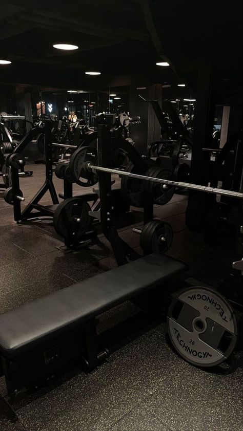
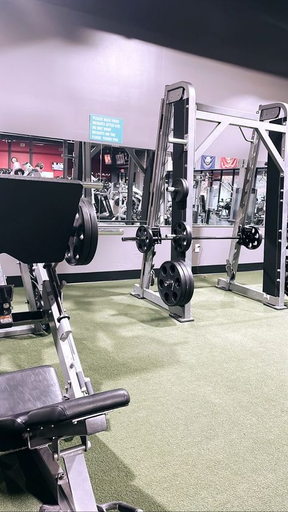
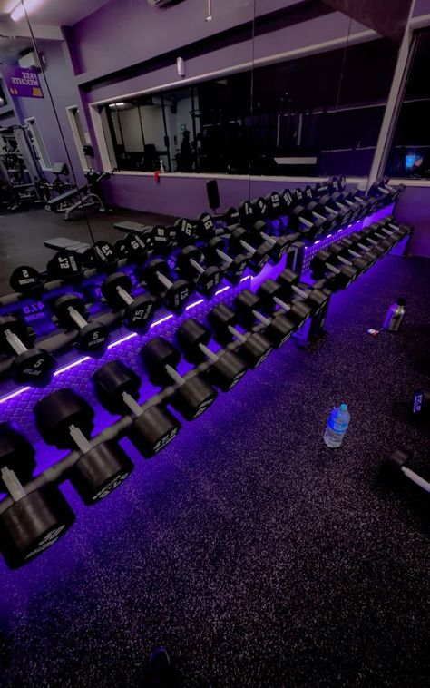
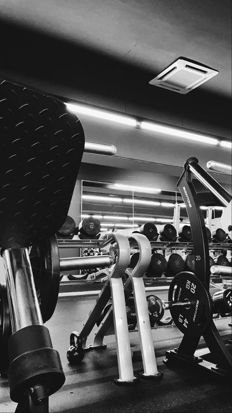

- HOME
- DINING
- MEETING & BANQUETING
- RECREATIONAL SERVICES
- EVENT
- GALLERY

DATE
CHOOSE ADULT
CHILDREN
WELCOME TO EKO HOTEL & SUITES
The Most Preferred Hotel in West Africa
and it is all about the right mix! Located in the heart of Victoria Island,
we offer our clients a perfect blend of business & leisure amenities with dining and recreational options delicately infused in one amazing space. We crown all these with services that meet the highest international standards. Overlooking the new Eko Atlantic City and Atlantic Ocean,
it is just a 10-minute drive to the City Centre and only 45minutes away from the Airport. Our hotels are designed for your comfort and convenience.
Your security is our primary concern and you will find our customer care second to none.
OUR HOTEL
Eko Hotel rooms and suites are decorated and designed for your comfort and relaxation.
Recreational Services
   WE HAVE OUR EQUIPPED GYM WITH SAUNA ROOM ARE ACCESSIBLE TO OUR IN-HOUSE FIT FAM JUNKIES,AND COMES WITH OUR OWN AVAILABLE TRAINEE
OPENING TIME:MONDAY TO SATURDAY AT 8:00 TO 9:30AM
EKO DINING
The Sky Restaurant has a 'wow' factor that is hard to dispute. It's about the highest restaurant in the city of Lagos and has a picturesque view of both the city and the Atlantic Ocean. It offers Asian fusion menu delicacies! Get pampered by our award winning chef as he performs his art with a fusion of culinary traditions that combines different cuisines from the south-eastern/Asian region into a single eating experience. It seats 130 people dining Open Daily for: Lunch: 12noon – 3pm (excluding Sundays) Dinner: 6pm -10.30pm Bar: 12noon-1am For reservations, please call: 012772700 ext: 6370
The Atarodo is an infusion of afro-centric food culture. The menu is the brain-child of our British Nigerian chef using his Mama’s recipes and is derived from local Nigerian dishes. Every meal is pure passion on a plate, from our plantain coquettes to our Asun pizza inspired by and celebrating the African lifestyle. Enjoy an amazing interpretation of Nigerian food with a twist. Open Daily for: Breakfast: 6.00am - 10.30am Lunch: 12noon - 3.00pm Dinner: 6.00pm - 10.00pm
LAGOON BREEZE Located by the swimming pool, the Lagoon Breeze Restaurant is loved by those who know Lagos and appreciate nicely prepared grills. Come and enjoy the soothing breeze of the Atlantic Ocean and enjoy suya, pizzas; a wide variety of drinks and friendlier relaxed service. Sit amidst the lavish pool side of the Eko Hotel oasis. The breezy pool side bar and grill offers a casual yet all fresco dining with a view of the Atlantic Ocean at night under a canopy of stars. Open: Monday to Friday Time: 2pm - 12am Saturdays & Sundays: 12noon - 11pm Public Holidays: 12noon - 11pm
- ABOUT
- GALLERY
- OUR EVENT
- OUR HOTEL
- DINING
- OUR VISION & MISSION
- CONTACT US
- Plot 1415 Adetokbo Ademola Street, PMB 12724, Victoria Island, Lagos Nigeria
- International Calls: +234 201 2772700, National Calls: 0201 2772700
- Fax: +234 1 2704071
- sales@ekohotels.com, reservation@ekohotels.com, banquet@ekohotels.com